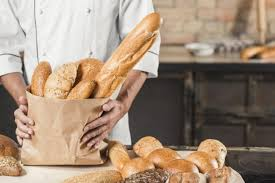

| PÁGINA INICAL | SOBRE NÓS | HISTÓRIA* | NOSSO BAIRRO | PRODUTOS | CLIENTES | FORNECEDORES | CONTATO |
A Panificadora Gran Trigo surgiu em 2004, com uma pequena produção baseada no comércio de pãos caseiros.
Ao longo do tempo, a procura pelos pães foi ficando cada vez maior, e com isso a produção também crescia, então aderimos a uma franquia, a qual
nos possibilitou reconhecimento de nosso nome e a criação de fato da panificadora Gran Trigo, em 2012.
Desde então trabalhamos com uma produção focada no preparo de pães dos diversos tipos, que são geralmente destinados às padarias do Brasil.
